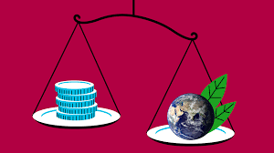
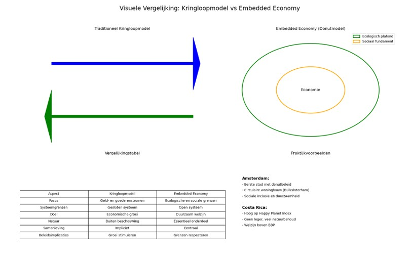

Al vroeg in onze economische studies leren we over het kringloopmodel, een overzichtelijke weergave van de relaties tussen gezinnen, bedrijven, de overheid en het buitenland via geld- en goederenverkeer. Jarenlang vormde dit model de basis van het traditionele economische denken en stuurde het onderwijs en beleidsvorming. Maar de wereld is veranderd. Door klimaatverandering, verlies aan biodiversiteit, groeiende ongelijkheid en maatschappelijke onrust moeten we anders over economie nadenken. De Britse econome Kate Raworth biedt hier een oplossing voor: de ingebedde economie, weergegeven in haar bekende donutmodel.
We hebben zorgvuldig onderzocht de overeenkomsten en verschillen tussen het klassieke kringloopmodel en het idee van de embedded economy. De focus ligt op hun achtergrond, structuur, sterke en zwakke punten, en hoe ze zich verhouden tot actuele uitdagingen in de samenleving. Daarbij putten we inspiratie uit "Groeiende Economie" van Praktische Economie en illustreren we de theorie met concrete voorbeelden uit steden als Amsterdam en landen zoals Costa Rica. Uiteindelijk proberen we de vraag te beantwoorden: welk van deze modellen is het meest geschikt voor de economie van de toekomst?
Het traditionele kringloopmodel: helder maar beperkt
Het kringloopmodel biedt een vereenvoudigde uitleg van de manier waarop geld en producten binnen een economie bewegen. In zijn eenvoudigste vorm laat het de relatie zien tussen huishoudens en bedrijven: huishoudens bieden arbeid aan en ontvangen daarvoor salaris, waarmee ze goederen en diensten kopen die door bedrijven worden aangeboden. In meer uitgebreide versies wordt ook de overheid en het buitenland en de financiële sector meegenomen. Het model is cirkelvormig: geld en goederen verplaatsen zich in tegenovergestelde richtingen, wat de economische activiteit in stand houdt.
In het boekje Groeiende Economie wordt dit model toegepast om economische groei, schommelingen in de economie, werkloosheid en overheidsinterventies aan te duiden. Het dient als een effectief instrument dat helpt om de basisprincipes van macro-economie onder de knie te krijgen. Desondanks kent het model aanzienlijke tekortkomingen. Het houdt geen rekening met de ecologische grenzen van de aarde, negeert problemen van sociale ongelijkheid en welzijn en veronderstelt uiteindelijk dat economische groei onbeperkt is. In een wereld waar de impact van klimaatverandering en sociale ongelijkheid steeds duidelijker wordt, voldoet dit model niet.
Embedded economy: economie verbonden met de samenleving en de natuur
Volgens Kate Raworth functioneert de economie niet in isolatie, maar is ze vastgebonden met zowel de maatschappij als de natuurlijke omgeving. Haar idee, bekend als de 'embedded economy', ziet de economie als een zeer belangrijk onderdeel van onze sociale en ecologische systemen. De economie put hulpbronnen uit de natuur, transformeert deze in producten en diensten, en genereert vervolgens afval en uitstoot. Bovendien steunt economische activiteit op cruciale sociale factoren, zoals onderwijs, gezondheidszorg, rechtvaardigheid en wederzijds vertrouwen. Dit idee wordt visueel weergegeven als een donut, bestaande uit een binnenste en een buitenste ring. De binnenste ring symboliseert het sociale fundament, oftewel de basisbehoeften die voor iedereen toegankelijk moeten zijn, zoals voeding, huisvesting, scholing, gezondheidszorg en politieke participatie. De buitenste ring geeft het ecologische plafond, de grenzen van wat de aarde aankan weer, bijvoorbeeld een stabiel klimaat, biodiversiteit en zuivere lucht. Het gebied tussen deze twee ringen vormt de veilige en rechtvaardige plek voor de mensheid: de donut zelf. In tegenstelling tot het circulaire model, is de embedded economy van nature stelt het concrete doelen voor een eerlijke en duurzame samenleving. Dit model sluit aan bij de Duurzame Ontwikkelingsdoelen van de VN en biedt een richting aan voor beleid dat zich richt op algemeen welzijn, in plaats van economische expansie.
Overeenkomsten en verschillen tussen de modellen
Hoewel beide modellen economische processen in kaart brengen, verschillen hun uitgangspunten en doelstellingen zeer sterk. Het kringloopmodel is waarde-vrij en legt de nadruk op het verklaren van economische groei. Het embedded model daarentegen, is gebaseerd op waarden en heeft als doel een eerlijke en duurzame samenleving te creëren. Terwijl het kringloopmodel de economie ziet als een gesloten systeem, beschouwt Raworth de economie als een open systeem dat afhankelijk is van de ecologische en sociale context. Beide modellen zijn versimpelingen van de werkelijkheid, maar het embedded model geeft een uitgebreider en realistischer beeld van de complexe relaties tussen mensen, economie en milieu. Het kringloopmodel is vooral geschikt voor het bestuderen van economische schommelingen op korte termijn, terwijl het embedded model beter aansluit bij de lange termijn uitdagingen van de 21e eeuw.
Van theorie naar praktijk: Amsterdam en Costa Rica
Het donutmodel is niet slechts een theoretisch concept; het wordt inmiddels wereldwijd toegepast. In 2020 nam Amsterdam als eerste stad ter wereld het donutmodel aan als leidraad voor haar beleid. De stad gebruikt dit model om woningbouw te verduurzamen, sociale ongelijkheid te verminderen en de circulaire economie te stimuleren. Een voorbeeld hiervan is het Buiksloterham-project, waar sociale samenhang en circulaire bouwmethoden hand in hand gaan. Ook op nationaal niveau zijn er inspirerende voorbeelden. Costa Rica staat al jarenlang hoog op de Happy Planet Index. Het land heeft geen leger, investeert fors in onderwijs en gezondheidszorg en beschermt een kwart van zijn grondgebied als natuurgebied. Ondanks een relatief laag BBP is het welzijn van de inwoners hoog. Dit laat zien dat economische vooruitgang mogelijk is zonder oneindige groei.
Nederland en de donut: kansen en uitdagingen
Nederland beweegt zich in de richting van een bredere definitie van welvaart. Het CBS publiceert jaarlijks de Monitor Brede Welvaart, waarin naast economische groei ook welzijn, milieu en ongelijkheid worden geanalyseerd. De klimaatwet, het stikstofbeleid en lokale donut-initiatieven laten zien dat er een verschuiving plaatsvindt naar een duurzamer beleid. Desondanks blijft economische groei vaak het belangrijkste doel. Beleidsmaatregelen worden nog te vaak beoordeeld op hun impact op het BBP, in plaats van op hun bijdrage aan duurzaamheid en welzijn. De uitdaging is om ecologische grenzen leidend te maken bij economische beslissingen, en sociale rechtvaardigheid centraal te stellen in het beleid.
Kate Raworths baanbrekende model vormt een krachtig tegenwicht tegen traditionele economische denkwijzen. Het is breed georiënteerd, toekomstgericht en resoneert met de idealen van een opkomende generatie. Toch is dit model minder concreet en lastiger te meten dan de circulaire benadering. De toepassing vraagt om politieke daadkracht, eendrachtige samenwerking en een toekomstvisie. Deze aspecten zijn echter geen intrinsieke zwaktes, maar eerder obstakels die overwonnen moeten worden bij de invoering. Het donutmodel is geen kant-en-klare blauwdruk, maar eerder een richtlijn, een soort van raamwerk dat ruimte laat voor lokale interpretatie en uiteenlopende culturele contexten.
Afsluitende gedachten
De economie van de toekomst heeft behoefte aan een ander verhaal. Een verhaal waarin economische groei niet langer het einddoel is, maar een instrument om welvaart te creëren binnen de grenzen op aarde. Het circulaire model heeft ons veel geleerd, maar schiet tekort. Raworths embedded model biedt een breder, eerlijker en realistischer beeld. Voor het onderwijs betekent dit dat we jongeren moeten leren over de werking van de economie en de maatschappelijke doelen ervan. Voor beleidsmakers betekent dit dat economische beslissingen beoordeeld moeten worden op hun impact op mens en milieu, niet alleen op het BBP. En voor iedereen betekent dit dat we moeten nadenken over wat echt telt: een bloeiende economie, binnen de donut.